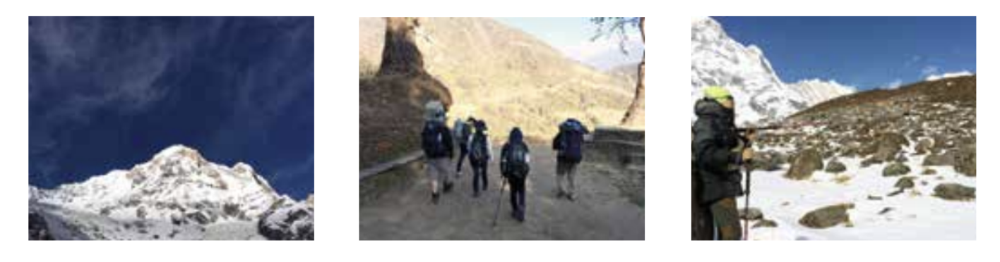
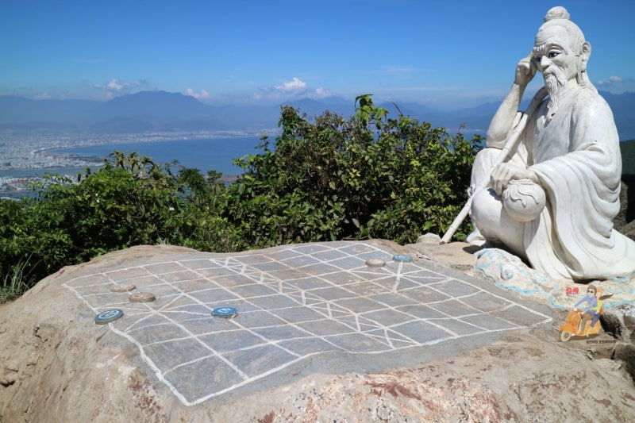

Blog
선짜산 탐방 -1편-
여행의 시작
선짜산 방문기
항상 이런 식이다.
몇 년 전 지인들과 함께 올랐던 히말라야 산행!
산행이라고는 중학교 소풍 때 올랐던 동네 뒷산이 마지막 기억인데..
술김에 나온 등정 이야기.
그리고 호기롭게 "오케이!"를 외쳤고 다음 날 메신저에 올라온 "네팔 히말라야 등정 계획 및 비용 청구서"를 보며 좌절했다.아차, 나는 오케이 하면 결제 먼저 해버리는 무서운 지인을 뒀었지.
일사천리로 진행되는 준비 과정들, 그리고 어느새 네팔행 비행기. 설렘과 두려움.
지옥에 3,400계단, 촘롱, 데우랄리, 안나 푸르나 베이스 캠프, 성산 마차푸차레.. 8박11일의 이야기가 나에겐 천일야화보다 많은 이야기를 만들어 냈었다.

내 여행은 항상 이런 식이다.
귀찮음, 두려움을 극복하면 펼쳐지는 도원경(桃源境)
삶도 인생도 게으름과 두려움의 극복이 관건이라던가?
여행은 항상 우리를 설레게하고 감정을 촉발시켜 무언가 터져 나오게 만든다.
그것이 감동이든 곪아서 터지기 직전의 상처인지는 모르지만 말이다.
모든 여행기와 모험기는 사실 그 과정이 이야기로서 가치를 갖는다.
크리스마스 보다 크리스마스 이브가 더 설레고 즐거운것처럼 안나 푸르나 베이스 캠프에 도착했을 때 감격보다 그 정상을 향한 여정의 여운이 아직도 가슴속에 낙인처럼 박혀 아련하게 떨린다.
아니나 다를까?
역시 또 이런식으로 계획에 없던 여행을 하게 되었다. 언제고 정상에 이르러 마침내 행복해질지 모르겠으나 그 여정을 이곳 다낭에서 먼저 시작해 보려고 한다.
세계 6대 해변중에 하나인 미케(Mi Khe) 해변을 따라 보응우 옌잡(Vo Nguyen Giap,武元甲(무원갑))로가 쭈욱 펼쳐져 있다. 아름다운 계곡(My Khe)이라는 뜻을 가지고 있는 이 미케 해변을 따라 조금 더 올라가면 황사(Hoang Sa)로가 나오고 그 위로 마치 망치의 머리처럼 툭 튀오 나온 선짜 반도( Ban dao Son Tra)가 있다. 선짜 반도는 양쪽으로 거리가 약16km인데 이 반도 전체가 산을 이루고 있으며, 정상 높이가 693m나 된다. 다낭과 충적토로 연결되어 형성되어 있으며 폭풍우와 태풍으로부터 다낭시를 보호해 주는 바람막이 역할을 하는 천해의 방패이다.
선짜는 '티엔사(Tien Sa,천사)'라는 이름으로 불리기도 했는데 "신선들이 내려왔다" 라는 뜻이다. 이곳 선짜섬에 구전되어 오는 전설이 있어 이름이 선짜이다.
옛날 선짜산 정상에 두 신선이 내려와 장기를 두었는데 대국이 시작된지 몇 일이 지나도 서로 승부를 낼 수 없었던 두 신선중 한명이 베트남 제일이라는 티엔사(Tien Sa)해변으로 해수욕을 즐기기 위해 내려온 선녀들의 모습에 정신이 팔려서 승부에 패하게 되자 화를 내며 하늘로 돌아갔다는 전설에서 유례되어 이곳을 '티엔사(Tien Sa)'라고 부르기도 한다고 한다.

산 정상에 신선 한 명이 장기판을 앞에 두고 고뇌하는 모습을 재현해 두었다.
그래서 이곳을 장기판 꼭대기라는 뜻의 딘반꺼(Dinh Ban Co)라고 부른다. 오행산 영응사 뒤편 동굴에 전편의 내용을 담은 석상이 조성되어 있으니 이곳을 한번 찾아보는 것도 묘미이리라.
또한, 이곳은 천연림이 들어선 보호구역으로서 '마카크원숭이' 같은 희귀한 원숭이들이 서식하고 있어 원숭이 산(몽키마운틴)이라고도 부르며, 해변에는 '올리브 각시 바다거북이'가 서식하는 천혜에 보고 이기도하다.
< 오행산의 석굴안에 장기를 두는 두 신선 >
딘반꺼에 오르는 방법은 미케해변-해수관음상-인터컨티넨탈호텔을 거쳐 정상에 이르는 방법과 옛끼우(Yet Kieu)로를 따라 항구 근처에서 해군 관사 맞은편 길로 진입하여 정상에 오르는 두 가지 방법이 있다.
인터컨티넨탈 호텔로 올라가는 길은 가파르고 오르기가 어려워서 대부분 하산하는 길로 주로 사용되며 옛끼우 도로를 따라 올라가는 길을 선택한다
선짜산은 취사, 벌목, 낙서 및 산림 훼손이 금지되어 있고 레이더 기지 등 군사시설이 있으므로 함부로 아무 곳에 들어가거나 함부로 사진이나 비디오 촬영을 하지 않도록 유의해야 한다.
또한, 산행이므로 주유소에 들러 기름을 가득 채우고 이동 하는 것이 좋다. 정상에 물이나 기름을 팔고 있으나 베트남어가 부담스럽다면 호텔에 부탁해 미리 준비를 해두는 것도 좋다.
햇살을 마주하며 나아가다 보면 우거진 숲이 나타난다.
그렇게 20여 분을 올라가다 보면 레이더 전망대라 부르는 곳을 발견 할 수 있다. 밝은 날엔 멀리 해운고개(하이반 패스)가 보인다니 공기가 얼마나 깨끗한지 짐작 할 수 있으리라.
좌우로 늘어선 열국의 나무들이 서늘한 기운을 토해내며 우리를 반긴다. 고작 해발 690여 미터의 작은 산에서 느끼는 이 서늘함은 수목 관리엔 철저함을 기하는 베트남인들의 노력 때문이기도 하리라.
이 수목 애호가들이 수목 관리에 얼마나 신경을 쓰는지 몇 년 전 가뭄으로 마실 식수도 부족할 때 물차를 이용해 길가에 있는 나무들에 물을 주는 걸 자주 보았다.
탁트인 바다가 보이는 장소로 정자에서 사진을 촬영하는 내외국인을 많이 볼 수 있다. 이제는 베트남의 소득 수준도 상당해져 고가의 촬영 장비를 이용하는 사람들도 심심치 않게 볼수 있다.
전망대에서 내려다 본 바다의 풍경은 이미 기억속에 가물거리는 고국의 그것과 다를 바 없다. 물론 이제는 서울에서 잘 볼 수 없다는 파란 하늘이 어김없이 펼쳐져 있다.
그 하늘을 따라 펼쳐진 구름의 변화 무쌍함은 제갈량의 구궁팔괘진(九宮八卦金)마냥 살아 움직이며 현란함으로 꿈틀거린다.
인터넷에 떠도는 몇가지 부정확한 이야기 가운데 첫째가 바로 맹획의 칠종칠금(七宗七金)으로 유명한 제갈량의 남만 정벌 대상이 베트남이라는 이야기이며, 둘째가 서유기의 손오공이 다낭의 오행산에 갇혀 있었다는 이야기이다.
제갈량의 남만 정벌은 지금에 운남성 근처 지역을 벗어나지 못했다는 게 정설이다.
실지로 베트남은 삼국시대(위,촉,오) 즉 후한 말에 교주(交州)자사 사섭(士燮)이 그 영향력을 행사하다가 사섭이 오의 손권에게 항복하므로 오나라에 복속되게 되었다. 이후 사섭이 죽자 오나라의 손권은 베트남을 직접 통치하려 여대를 보내 사섭의 가족과 친족을 모두 죽이고 오나라의 영토로 삼았다. 훗날 베트남의 쩐 왕조(陳朝)는 사섭을 '선감가응령무대왕'(善感嘉應靈武大王)으로 추존했다. 그러나 이 손권의 통치는 가혹했으며 이 가혹한 세금 및 수탈에 맞서 민중이 봉기했는데 이때 이 봉기를 주도한 여성이 바로 바 찌에우(Ba Trieu)이다. 오나라의 장수 육윤의 군대를 맞아 6개월을 항전하였으나 안타깝게 패하여 이 봉기는 실패로 돌아가게 되고 만다. 그러니 맹획이나 남만은 이곳 베트남과는 아무런 관련이 없다.
오행산도 마찬가지이다.
손오공은 서정국과 당나라의 경계를 나누는 산인 양계산(兩界山)에 갇혀 있었다. 삼장법사가 손오공을 만나는 장면에서 태보와 나누는 다음과 같은 이야기가 나온다.
「太保道：這山舊名五行山，因我大唐王征西定國，改名兩界」 "태보가 말하길 이 산은 오래전에 오행산이라고 이름하니 당나라 황제가 서정국을 정벌하여 양계산이라고 이름을 고쳤습니다." 즉, 오행산에서 양계산으로 이름이 바뀐 게 당나라 시대며 양계산은 당나라와 서정국의 경계에 있는 산이니 아쉽게도 다낭의 오행산과는 관계가 없다.
잠깐의 휴식을 끝내고 뜨거워진 오토바이 좌석을 보며 한숨을 쉰다.
혼자 오토바이를 나무 그늘에 숨겨둔 미스터 탄(Mr.Thanh)의 엉덩이를 한번 걷어차고 싶었으나, 나의 게으름을 탓하며 해처럼 달구어진 안장에 무거운 엉덩이를 올리고 정상을 향해 출발했다.